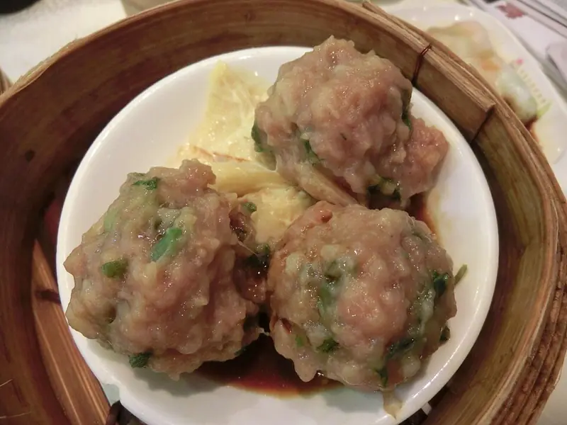

Фото: Soatiarumlea, CC BY-SA 3.0

Куриные котлеты на пару
Нежные паровые котлеты без масла, подходят детям и для диеты
40 мин4 порц.272 ккал на порциюБ 29 · Ж 14 · У 7Русская кухня
Продукты на 4 порц.
- Куриный фарш600 г
- Лук репчатый1 шт
- Яйцо куриное1 шт
- Овсяные хлопья3 ст. л.
- Вода3 ст. л.
- Соль1 ч. л.
- Перец чёрный молотый1 щеп.
- Укроп по желанию0,5 пучок
Как готовить
- Овсяные хлопья залейте водой и оставьте на 10 минут набухнуть.
- Лук натрите на мелкой тёрке или измельчите блендером. Укроп мелко порубите.
- Смешайте фарш, лук, яйцо, хлопья, соль, перец и укроп. Отбейте фарш: поднимите и бросьте в миску 10-15 раз, так котлеты не развалятся.
- Мокрыми руками слепите 10-12 небольших котлет.
- Выложите котлеты в пароварку или на решётку над кастрюлей с кипящей водой, огонь средний. Накройте крышкой.
- Готовьте 20-25 минут. Готовая котлета упругая, на разрезе белая, без розового цвета.
Совет. Если нет пароварки, подойдёт металлический дуршлаг над кастрюлей под крышкой. Главное, чтобы вода не касалась котлет.